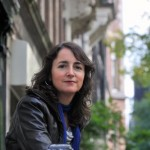
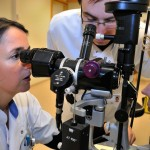
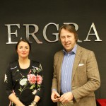
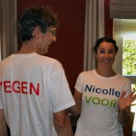

Nicolle Brüll
Al tijdens mijn opleiding tot arts in Maastricht was ik mij bewust van de kracht van onderwijs. Er is niets mooier dan een ander iets te leren waar hij of zij meteen morgen mee aan de slag kan. Doceren vergt veel van je, maar de energie die je geeft tijdens het coachen van een cursist krijg je terug als je merkt dat het kwartje is gevallen. Of als je ziet dat iemand een vaardigheid beheerst en ook nog weet toe te passen als de omstandigheden net iets moeilijker zijn. Onderwijs is een vak, en je bent zelf voortdurend een rolmodel. “Practice what you preach” is dan ook mijn devies!

Als oogarts vind ik het een uitdaging om het oog en haar ziektebeelden begrijpelijk te maken voor een ieder die er ook maar iets van af wil weten. Ik geef dan ook op verschillende niveaus les, van MBO tot Universiteit, van doktersassistente tot huisarts.
Allerlei werkvormen zijn bespreekbaar, ik stel ze voor u samen. Wilt u een workshop over het rode oog met oefenen van basale onderzoeksvaardigheden, of wilt u een voordracht over diabetische retinopathie? U kunt bij mij terecht! Samen nemen we door wat uw wensen zijn, wat en hoe groot de doelgroep is, wat de leerdoelen zijn en welke mogelijkheden u heeft om bijvoorbeeld praktisch te oefenen. Zo komen we tot oogheelkundig onderwijs op maat.
Op deze website vindt u meer informatie over de achtergronden en mogelijkheden van Oog & Onderwijs.
Nicolle Brüll
Werkzaamheden



MBO TOA opleiding Dutch Health Tec Academy, Utrecht
Sinds 2003 ben ik met veel plezier als oogarts-docent betrokken bij de opleiding tot technisch oogheelkundig assistent. Ik verzorg een deel van de lessen over oogaandoeningen. De lessen hebben een interactief karakter en bevatten klassikaal theorie onderwijs alsmede praktijklessen in de optiek-units van de school. Voor meer informatie over de opleiding zie www.dhta.nl bij TOA-opleiding.
Cursussen/workshops oogheelkunde
Op aanvraag ontwerp ik lesmateriaal en doceer ik over een oogheelkundig onderwerp. Zo heb ik voor congresorganisatie SCEM een dag ontworpen over kinderoogheelkunde voor artsen in de Jeugd Gezondheidszorg. Voor Ergra Low Vision verzorg ik een Master Class voor haar optometristen. Voor I-Optics heb ik een webinar ontworpen en gegeven over screening op Diabetische Retinopathie. In de agenda kunt u meer informatie hierover vinden.
Projecten begeleiding en organisatie.
Zie LinkedIn en of Google Witte Jas Ceremonie VUmc en/of Asselbergs professioneel gedrag examinator.
Dagvoorzitter oogheelkundige symposia
Ook als dagvoorzitter ben ik inzetbaar. Ik zie het als een uitdaging om een laag-drempelige sfeer onder de toehoorders te scheppen en probeer bruggen te slaan tussen de diverse sprekers. Ik verwijs u graag naar de agenda en de feedback pagina’s (SCEM, AMO).
Teach the Teacher I cursusleider regio Amsterdam
Na een inwerkperiode ben ik sinds 2012 cursusleider bij de TtT programma’s in de regio Amsterdam. Bij deze 2-daagse cursus leren de AIOS of medisch specialisten op een actieve wijze de basisprincipes van het medisch onderwijs. Er wordt gewerkt met rollenspelen, geoefend met het geven van presentaties (Kort Onderwijs Moment), het geven van feedback volgens de Pendleton regels, het beoordelen en voeren van een KPB e.d. Het is een intensieve cursus voor zowel cursisten als cursusleiders. En een logische stap voor mij als onderwijs liefhebber.
Columnist Oculus Vakblad voor de Optiekbranche
Per 1 maart 2013 ben ik vaste columnist voor de Oculus. Het spreekt mij erg aan om oogheelkundige belevenissen op papier te zetten, je leert immers het meeste van de verhalen van patiënten. En het schrijven van een column voor opticiens en optometristen biedt mij de gelegenheid om ook een stukje te kunnen doceren op een aantrekkelijkere wijze dan een puur theoretisch verhaal over een oogaandoening. Ik ga proberen met mijn columns een brug te slaan tussen de praktijk van de optiek en die van de oogarts. Dat duidelijk is wat er gebeurt met de verwezen patiënt en wat het belang van een alerte eerste lijn is voor de oogzorg in het algemeen. Want we hebben elkaar nodig om de oogzorg in Nederland perfect te laten zijn!
Agenda
2012
Quadriceps Symposium Workshop diabetische retinopathie, 2 februari, Utrecht
Ergra Masterclass Maculadegeneratie, 6 februari, Den Haag
Tracé Oogtrauma en ziektebeelden voorsegment, 1 maart, UMC Utrecht
Teach the Teacher deel I, 12/13 maart en 9/10 juli, VU Medisch Centrum
Webinar i-Optics Belang van diabetische screening in de 1e lijn, 19 maart
TOA lesdagen 17 april & 29 mei
Klinische les Maculadegeneratie, 13 september, Oogkliniek Heuvelrug Zeist
NvTOA jaarcongres Diabetes Screening, 5 oktober, Nijkerk
Patiënten voorlichting Maculadegeneratie, 25 oktober, Oogkliniek Heuvelrug Zeist
AMO Live refractive surgery, 17 november, Oogkliniek Heuvelrug Zeist
Huisartsencongres Diabetische screening, 20 november, Den Bosch
TOA lesdag OCT & Maculadegeneratie, 28 november, Utrecht
Vuurwerk voorlichting basisscholen groep 8, 11 december, Zeist
2013
Teach the Teacher I cursusleider, 21 en 22 januari, VUmc, Amsterdam
SCEM Jeugdgezondheidszorg Congres Oog voor het kind, 31 januari, De Reehorst, Ede
TV programma Westbroek over thema slechtziendheid, 26 februari, RTV Utrecht
Beroepenvoorlichting Voortgezet Onderwijs, 28 februari, Nieuwegein
TOA lesdagen 13 maart, 19 maart, 24 april en 29 mei, DHTA, Utrecht
Ergra Master Class Traanogen, 25 april, Oogkliniek Heuvelrug Zeist
Teach the Teacher I cursusleider, 2 en 3 september, VUmc, Amsterdam
VOVZ congres debat leider, 5 november, locatie volgt
TOA lesdag 12 november, DHTA, Utrecht
AMO Advanced Phaco Course, 23 november, Zeist
Teach the Teacher I cursusleider, 16 en 17 december, VUmc, Amsterdam
2014
Teach the Teacher Cursus I, 3 en 4 februari, VUmc, Amsterdam
TOA lesdagen 19 maart, 25 maart, 6 mei, 7 mei, 13 mei en 3 juni, DHTA, Utrecht
MD cafe voorlichting patiënten bijeenkomst, 5 maart, Wageningen
Beroepenvoorlichting Cats College IJsselstein, 6 maart
NUVO Academy cursus herkenning van ziektebeelden “The Big Four”, 7 april, Oogkliniek Heuvelrug, Zeist
Teach the Teacher cursus I, 19 en 20 mei, VUmc, Amsterdam
Teach the Teacher I, 30 juni en 1 juli, VUmc, Amsterdam
Vragenuur optometristen Oogbus, 24 september, Oogziekenhuis Rotterdam
Observatie Teach the Teacher, 29 september en 10 november, VUmc, Amsterdam
Teach the Teacher I nieuwe stijl dag 1, 11 november, VUmc, Amsterdam
Klinische les maculopathie, 24 november, HU Optometrie, Utrecht
Klinische les vasculaire retinopathie, 1 december, HU Optometrie, Utrecht
Teach the Teacher I nieuwe stijl dag 2, 16 december, VUmc, Amsterdam
E-learning modules NUVO, in ontwikkeling
2015
Klinische les erfelijke retinopathie, 5 januari, HU Optometrie, Utrecht
Klinische les AMD, 19 januari, OKH, Zeist
Teach the Teacher docenten overleg, 27 januari, VUmc, Amsterdam
Werkgroep Zien, 2 februari, DHTA, Utrecht
Teach the Teacher, 12 februari, VUmc, Amsterdam GEANNULEERD
Klinische les AMD, 26 februari, OKH, Zeist
Teach the Teacher, 17 maart, VUmc, Amsterdam GEANNULEERD
TOA lesdag, 24 maart, DHTA, Utrecht
TOA lesdagen 15 april, 22 april, 28 april, DHTA, Utrecht
Teach the Teacher, 12 mei, VUmc, Amsterdam
TOA lesdagen 13 mei, 26 mei, DHTA, Utrecht
TOA lesdagen 3 juni, 9 juni, DHTA, Utrecht
Teach the Teacher, 16 juni, VUmc, Amsterdam
Teach the Teacher AIOS, 30 juni, VUmc, Amsterdam
Ergra Masterclass, 12 oktober, Houten
2016
Workshop Samenwerken kan ik al!, 24 maart, TOP dag Oogkliniek Heuvelrug Zeist
Workshop Adviesraad Novartis tav gebruik Lucentis, 10 mei, Eemnes
Nascholing Kinderneurologie panellid, 20 mei, SCEM congres, CineMec Nijmegen
Ergra Masterclass Neurologie, 6 juni, Houten
Observeren & feedback geven, 8 juni, TOP dag Oogkliniek Heuvelrug
Vrijwilliger Opening Eyes Special Olympics, 2 juli, Nijmegen
Training debutanten Novartis, 16 september, Rotterdam
MD Cafe laatste nieuws, 14 oktober, Wageningen
Teach the Teacher AIOS, 18 oktober, VUmc Amsterdam
Teach the Teacher AIOS, 1 november, VUmc Amsterdam
Teach the Teacher I, 7 november, VUmc Amsterdam
Teach the Teacher I, 12 december, VUmc Amsterdam
2017
Teach the Teacher I, 18 mei, VUmc Amsterdam
Teach the Teacher I, 15 junk, VUmc Amsterdam
2018
-
2019
-
2020
-
2021
-
2022
-
2023
-
Feedback / Evaluatie
Contact
Wilt u meer informatie over de cursussen of heeft u vragen? Neem dan gerust contact met mij op! U kunt mij bereiken via het onderstaande e-mail formulier.